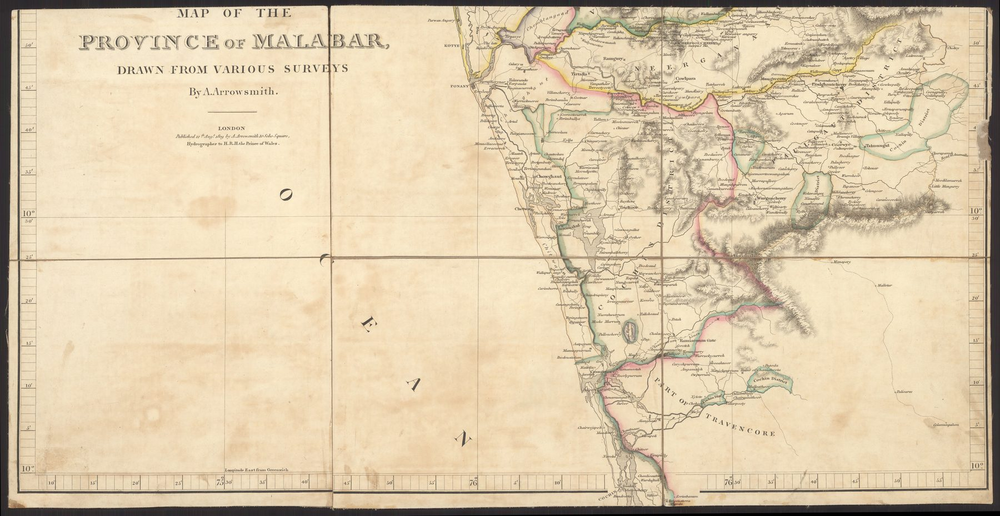

One part of a larger instrument
This is Sheet 1 of the 1809 Malabar map. The complete province was divided into three sections so that a large-scale regional survey could be printed, mounted and folded for practical use.
The significance of the sheet
The composite view restores the province as a whole; the individual sheet restores the material object. Its edges, folds and partial geography remind us that maps used in offices and in the field were handled one section at a time. Administrative vision depended on such physical compromises.
The gaze
A folded sheet in a case is the form in which most of this survey was actually consulted. The northern third of the province, its edges cut by the sheet line rather than by any feature of the country, is what an officer would have had open on the table; the whole map existed largely as an idea. The survey’s working unit was the part, sized for the case and the desk.
In the Deccan timeline